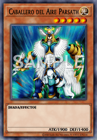
Caballero del Aire ParshathOficial: Caballero del Aire Parsath 2 copia(s) · CID 5023Galería completa del inventario documentado
Imágenes auténticas recuperadas de Konami Neuron o del archivo original, enlazadas por identificador oficial CID. Las cartas no documentadas físicamente no se añaden.
Main · 29 identidades
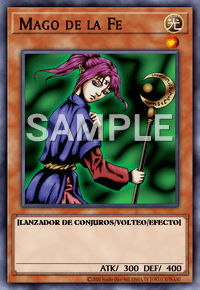
Mago de la Fe 2 copia(s) · CID 4434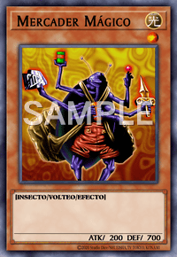
Mercader Mágico 2 copia(s) · CID 5663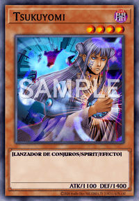
Tsukuyomi 2 copia(s) · CID 5780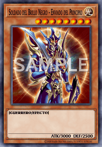
Soldado del Brillo Negro - Enviado del Principio 1 copia(s) · CID 5835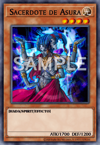
Sacerdote de Asura 1 copia(s) · CID 5381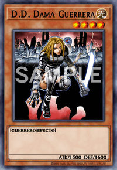
D.D. Dama Guerrera 1 copia(s) · CID 5719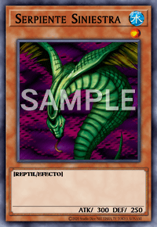
Serpiente Siniestra 1 copia(s) · CID 4481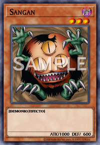
Sangan 1 copia(s) · CID 4054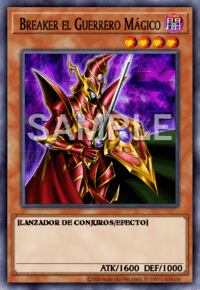
Breaker el Guerrero Mágico 1 copia(s) · CID 5655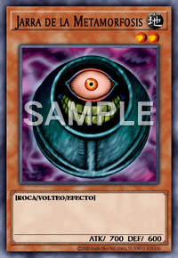
Jarra de la Metamorfosis 1 copia(s) · CID 4597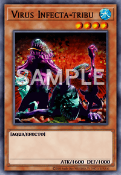
Virus Infecta-TribuOficial: Virus Infecta-tribu 1 copia(s) · CID 5660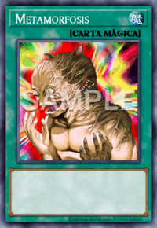
Metamorfosis 3 copia(s) · CID 5539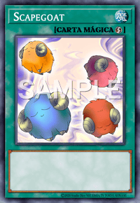
Scapegoat 2 copia(s) · CID 4818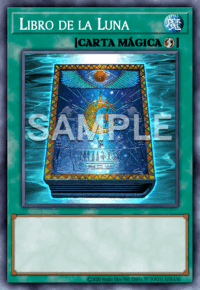
Libro de la Luna 2 copia(s) · CID 5432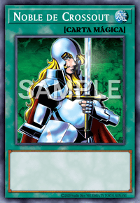
Noble de Crossout 2 copia(s) · CID 4963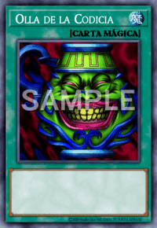
Olla de la Codicia 1 copia(s) · CID 4844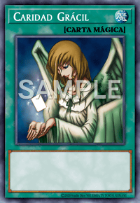
Caridad Grácil 1 copia(s) · CID 4812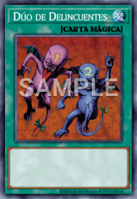
Dúo de Delincuentes 1 copia(s) · CID 4901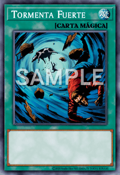
Tormenta Fuerte 1 copia(s) · CID 4891 Tifón del Espacio Místico
1 copia(s) · CID 4909
Tifón del Espacio Místico
1 copia(s) · CID 4909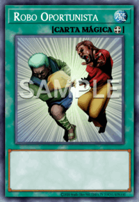
Robo Oportunista 1 copia(s) · CID 4898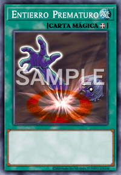
Entierro Prematuro 1 copia(s) · CID 4966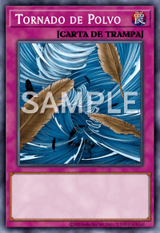
Tornado de Polvo 2 copia(s) · CID 4988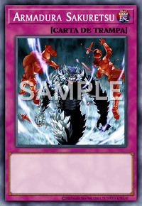
Armadura Sakuretsu 2 copia(s) · CID 5799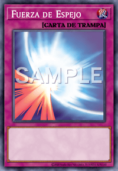
Fuerza de Espejo 1 copia(s) · CID 4887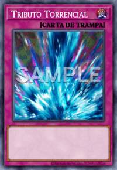
Tributo Torrencial 1 copia(s) · CID 5114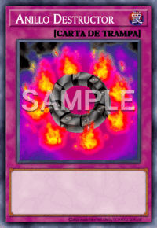
Anillo Destructor 1 copia(s) · CID 5005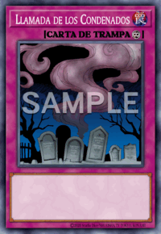
Llamada de los Condenados 1 copia(s) · CID 4989Extra · 10 identidades
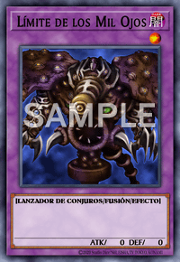
Límite de los Mil Ojos 3 copia(s) · CID 4740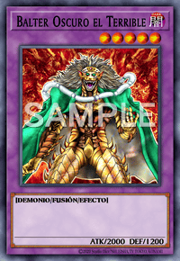
Balter Oscuro el Terrible 2 copia(s) · CID 5302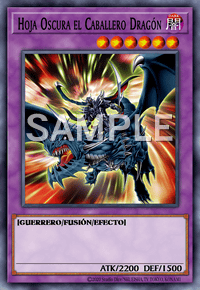
Hoja Oscura el Caballero Dragón 2 copia(s) · CID 6204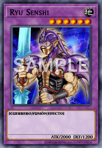
Ryu Senshi 1 copia(s) · CID 5319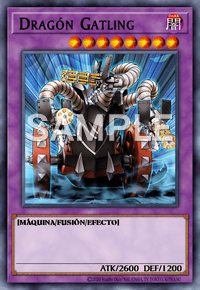
Dragón Gatling 1 copia(s) · CID 6264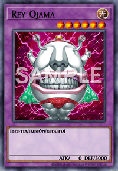
Rey Ojama 1 copia(s) · CID 6126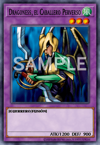
Dragoness, el Caballero Perverso 1 copia(s) · CID 4300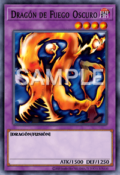
Dragón de Fuego Oscuro 1 copia(s) · CID 4174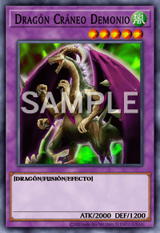
Dragón Cráneo Demonio 1 copia(s) · CID 5338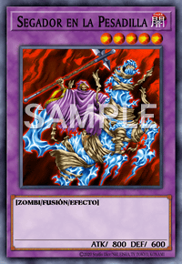
Segador en la Pesadilla 1 copia(s) · CID 5528Decisiones tácticas de este deck · V40
Estudia una situación de rival, luego abre las rutas ilustradas A09. No son resultados de simulador ni sustituyen las condiciones de la carta.
Probabilidades exactas de mano de cinco
- ≥1 Scapegoat: 23.72% de coincidencia; resolución del efecto no garantizada.
- ≥1 Metamorfosis: 33.76% de coincidencia; resolución del efecto no garantizada.
- Scapegoat Y Metamorfosis: 6.81% de coincidencia; resolución del efecto no garantizada.
- ≥1 Libro de la Luna: 23.72% de coincidencia; resolución del efecto no garantizada.
- ≥1 Mago de la Fe: 23.72% de coincidencia; resolución del efecto no garantizada.
- ≥1 Caridad Grácil u Olla de la Codicia: 23.72% de coincidencia; resolución del efecto no garantizada.
- ≥1 Caballero del Aire Parshath: 23.72% de coincidencia; resolución del efecto no garantizada.
- BLS Y Caridad (coincidencia, no asegura LIGHT/DARK): 1.28% de coincidencia; resolución del efecto no garantizada.
Mirror GOAT con fichas
Si empiezas: Scapegoat en turno rival→Meta turno propio; reservar Libro para TER.
Si vas segundo: Tsukuyomi y Libro pueden resetear TER respetando cambios de posición.
Side físico: Side GOAT no recibido: no atribuir cartas extra.
Riesgo: Scapegoat durante tu turno impide invocar ese mismo turno, aun usando Meta.
Oponente usa monstruos FLIP
Si empiezas: Mago de la Fe recupera magia concreta; Mercader filtra a velocidad lenta.
Si vas segundo: Noble de Crossout apunta un monstruo boca abajo; no sirve sobre boca arriba.
Side físico: Sin Side documentado.
Riesgo: Cuidado con Morphing Jar: ambos jugadores renuevan la mano.
Backrow múltiple / trampas
Si empiezas: Colocar Tornado de Polvo y conservar MST/Heavy Storm según cadena.
Si vas segundo: Breaker elimina una M/T conforme a sus contadores; no inventar múltiples destrucciones.
Side físico: Sin Side documentado.
Riesgo: Anillo y Tributo Torrencial afectan propio campo cuando corresponda.
Daño con Parshath vs convertir por Meta
Si empiezas: Mantener Caballero del Aire si puede infligir daño y robar.
Si vas segundo: Solo convertir Parshath Nivel5 en Balter/Reaper si el intercambio justifica perder robo.
Side físico: Sin Side documentado.
Riesgo: No declarar dos salidas al mismo tiempo; el Parshath es Tributado.
Grind: manos pequeñas
Si empiezas: Serpiente Siniestra/Mago de la Fe permiten sostener recursos con reglas 2005.
Si vas segundo: Caridad y BLS dependen de LIGHT/DARK y de carta BLS realmente en mano.
Side físico: Sin Side documentado.
Riesgo: No trasladar erratas, prioridad y lista actual a GOAT histórico sin confirmar variante.
Campo rival con monstruo grande
Si empiezas: D.D. Dama Guerrera y Snatch Steal son respuestas con ventanas distintas.
Si vas segundo: Snatch Steal + Meta transforma según Nivel real robado, nunca según nombre deseado.
Side físico: Sin Side documentado.
Riesgo: Efecto de TER equipa objetivo rival solo si el monstruo sigue siendo elegible al resolver.
Evaluar carta disponible, materiales, coste, zona y ventana; no asumir resolución sin respuesta del rival.
A06.0 — En 30 segundos: sinergias de este deck
- Dictamen de conjunto: esta lista busca controlar el ritmo con Scapegoat, Metamorfosis, FLIP y rematadores; los 14 slots Extra visibles no significan que todos sean accesibles desde la misma mano.
- Motor que mueve el deck: Scapegoat puede dejar fichas Nivel 1 durante el turno adversario; Metamorfosis permite tributar una ficha que siga controlándose en el siguiente turno para Invocar Límite de los Mil Ojos desde el Extra.
- Puentes reales: Libro de la Luna y Tsukuyomi pueden recolocar Límite de los Mil Ojos o un FLIP, pero no autorizan volver a voltear inmediatamente una carta que ya cambió posición ese turno.
- Sinergia indirecta: Caballero del Aire Parshath presiona y roba si inflige daño de batalla; Mago de la Fe recupera Mágicas tras su FLIP. Ambos producen recursos, no una Invocación de Fusión automática.
- Conflicto decisivo: activar Scapegoat impide otras Invocaciones en ese turno. **Jarra de la Metamorfosis** es un monstruo FLIP distinto de la carta Mágica **Metamorfosis**; no se enlazan por compartir nombre.
- Decisión concreta: conservar Parshath para combate y robo o convertirlo en Balter Oscuro mediante Metamorfosis, solo si ese Nivel 5 está en campo y el cambio aporta una respuesta útil.
- Qué aprender después: cotejar por ruta las ventanas GOAT de 2005, textos históricos y fuentes de Nivel 6/9 para Extra; el Side no fue recibido y no se suple por hipótesis.
Estado: dictamen funcional documental. Confirmar costes, zonas, ventanas y vínculos A09 antes de declarar una ruta acreditada.
A06.2 — Trazabilidad individual de 39 cartas (documental; rutas condicionales)
Una fila por identidad; cantidades intactas. Las referencias A09 indican candidatos de estudio, no validación de combos. Side solo entre duelos; GOAT no tiene Side recibido.
| Carta y fuente | Zona | Función A05 | Relación A06 | Condición / riesgo | A08/A09 | Siguiente control |
|---|---|---|---|---|---|---|
Caballero del Aire Parshath CID 5023 | Main ×2 | Atacante Nivel5, atraviesa defensa y roba si causa daño de batalla | MOTOR-GOAT-META-01 / CONDICIONAL | Requiere sacrificio o resurrección legítima; convertir a Balter sacrifica su presión | A09 candidatos G-C04 | PENDIENTE: probar participación causal y A07 |
Mago de la Fe CID 4434 | Main ×2 | FLIP para recuperar una Mágica de GY | MOTOR-GOAT-META-01 / CONDICIONAL | Está expuesto antes de voltear; recuperar solo cuando se activa FLIP | A09 candidatos G-C02 | PENDIENTE: probar participación causal y A07 |
Mercader Mágico CID 5663 | Main ×2 | FLIP excava hasta Magia/Trampa y manda los monstruos intermedios al GY | FUNCIÓN_AUTÓNOMA O INDIRECTA; SIN_RELACIÓN_CAUSAL_ACREDITADA | No escoge libremente cartas enviadas | SIN_COMBO_IDENTIFICADO | PENDIENTE: justificar uso autónomo / ausencia de ruta |
Tsukuyomi CID 5780 | Main ×2 | Espíritu que gira monstruo boca arriba a defensa boca abajo y vuelve a mano | MOTOR-GOAT-META-01 / CONDICIONAL | No permite volver a voltear inmediatamente monstruos que cambiaron posición/entraron ese turno | A09 candidatos G-C03 | PENDIENTE: probar participación causal y A07 |
Soldado del Brillo Negro - Enviado del Principio CID 5835 | Main ×1 | Rematador Nivel8: invocar desterrando LIGHT y DARK de GY; presión y destierro | MOTOR-GOAT-META-01 / CONDICIONAL | Necesita materiales correctos; opción desterrar implica perder ataque de ese turno | A09 candidatos G-C05 | PENDIENTE: probar participación causal y A07 |
Sacerdote de Asura CID 5381 | Main ×1 | Espíritu que batalla varios monstruos y regresa a mano | FUNCIÓN_AUTÓNOMA O INDIRECTA; SIN_RELACIÓN_CAUSAL_ACREDITADA | Vulnerable a respuesta en batalla | SIN_COMBO_IDENTIFICADO | PENDIENTE: justificar uso autónomo / ausencia de ruta |
D.D. Dama Guerrera CID 5719 | Main ×1 | Remoción por batalla de su rival y ella misma | FUNCIÓN_AUTÓNOMA O INDIRECTA; SIN_RELACIÓN_CAUSAL_ACREDITADA | Evalúa si conviene gastar Normal por intercambio | SIN_COMBO_IDENTIFICADO | PENDIENTE: justificar uso autónomo / ausencia de ruta |
Serpiente Siniestra CID 4481 | Main ×1 | Recurso repetible en GY bajo texto/errata histórica | FUNCIÓN_AUTÓNOMA O INDIRECTA; SIN_RELACIÓN_CAUSAL_ACREDITADA | Ajustar a versión GOAT acordada, no asumir recuperación ilimitada moderna | SIN_COMBO_IDENTIFICADO | PENDIENTE: justificar uso autónomo / ausencia de ruta |
Sangan CID 4054 | Main ×1 | Buscador al enviarse del Campo al GY, con texto de época | FUNCIÓN_AUTÓNOMA O INDIRECTA; SIN_RELACIÓN_CAUSAL_ACREDITADA | No buscar cartas fuera de su umbral de ATK | SIN_COMBO_IDENTIFICADO | PENDIENTE: justificar uso autónomo / ausencia de ruta |
Breaker el Guerrero Mágico CID 5655 | Main ×1 | Romper M/T con contador de hechizo al invocar | FUNCIÓN_AUTÓNOMA O INDIRECTA; SIN_RELACIÓN_CAUSAL_ACREDITADA | No gastar contador sin amenaza útil | SIN_COMBO_IDENTIFICADO | PENDIENTE: justificar uso autónomo / ausencia de ruta |
Jarra de la Metamorfosis CID 4597 | Main ×1 | FLIP: ambos descartan sus manos y roban cinco | FUNCIÓN AUTÓNOMA; NO ES LA MÁGICA METAMORFOSIS | Puede devolver ventaja al rival; distinguirla de la Mágica Metamorfosis | SIN_COMBO_IDENTIFICADO | PENDIENTE: justificar uso autónomo / ausencia de ruta |
Virus Infecta-Tribu CID 5660 | Main ×1 | Descartar carta, declarar Tipo, destruir monstruos boca arriba de ese Tipo | FUNCIÓN_AUTÓNOMA O INDIRECTA; SIN_RELACIÓN_CAUSAL_ACREDITADA | Simetría: puede destruir los tuyos | SIN_COMBO_IDENTIFICADO | PENDIENTE: justificar uso autónomo / ausencia de ruta |
Metamorfosis CID 5539 | Main ×3 | Tributa 1 monstruo propio y trae Fusión de mismo Nivel desde Extra | MOTOR-GOAT-META-01 / CONDICIONAL | No necesita Polimerización, sí un monstruo del Nivel requerido; invocación Especial | A09 candidatos G-C01 | PENDIENTE: probar participación causal y A07 |
Scapegoat CID 4818 | Main ×2 | Trae cuatro fichas oveja Nivel1 DEF si 4 zonas libres | MOTOR-GOAT-META-01 / CONDICIONAL | No puedes invocar otros monstruos durante ese mismo turno | A09 candidatos G-C01 | PENDIENTE: probar participación causal y A07 |
Libro de la Luna CID 5432 | Main ×2 | Cambiar 1 monstruo boca arriba a DEF boca abajo | MOTOR-GOAT-META-01 / CONDICIONAL | Interrumpe, protege o reinicia FLIP/TER en momento correcto | A09 candidatos G-C03 | PENDIENTE: probar participación causal y A07 |
Noble de Crossout CID 4963 | Main ×2 | Desterrar monstruo boca abajo y copias equivalentes del Deck conforme texto | FUNCIÓN_AUTÓNOMA O INDIRECTA; SIN_RELACIÓN_CAUSAL_ACREDITADA | No sirve contra monstruos boca arriba | SIN_COMBO_IDENTIFICADO | PENDIENTE: justificar uso autónomo / ausencia de ruta |
Olla de la Codicia CID 4844 | Main ×1 | Robar dos | FUNCIÓN_AUTÓNOMA O INDIRECTA; SIN_RELACIÓN_CAUSAL_ACREDITADA | Condiciones de Invocación y efectos del texto oficial | SIN_COMBO_IDENTIFICADO | PENDIENTE: justificar uso autónomo / ausencia de ruta |
Caridad Grácil CID 4812 | Main ×1 | Robar tres y descartar dos; prepara GY LIGHT/DARK | MOTOR-GOAT-META-01 / CONDICIONAL | No confundir descarte como coste/efecto sin leer texto | A09 candidatos G-C05 | PENDIENTE: probar participación causal y A07 |
Dúo de Delincuentes CID 4901 | Main ×1 | Disrupción temprana de mano rival por LP | FUNCIÓN_AUTÓNOMA O INDIRECTA; SIN_RELACIÓN_CAUSAL_ACREDITADA | Elige ventanas y efectos de descarte según texto de época | SIN_COMBO_IDENTIFICADO | PENDIENTE: justificar uso autónomo / ausencia de ruta |
Tormenta Fuerte CID 4891 | Main ×1 | Quita todas las M/T en campo | FUNCIÓN_AUTÓNOMA O INDIRECTA; SIN_RELACIÓN_CAUSAL_ACREDITADA | Destruye también tus propias cartas; temporizar | SIN_COMBO_IDENTIFICADO | PENDIENTE: justificar uso autónomo / ausencia de ruta |
Tifón del Espacio Místico CID 4909 | Main ×1 | Remueve M/T objetivo | FUNCIÓN_AUTÓNOMA O INDIRECTA; SIN_RELACIÓN_CAUSAL_ACREDITADA | Destruir una carta continua no equivale a negar todas las activaciones | SIN_COMBO_IDENTIFICADO | PENDIENTE: justificar uso autónomo / ausencia de ruta |
Robo Oportunista CID 4898 | Main ×1 | Robar control de monstruo rival si es posible | FUNCIÓN_AUTÓNOMA O INDIRECTA; SIN_RELACIÓN_CAUSAL_ACREDITADA | Requiere objetivo legal; guarda su Nivel para Metamorfosis | SIN_COMBO_IDENTIFICADO | PENDIENTE: justificar uso autónomo / ausencia de ruta |
Entierro Prematuro CID 4966 | Main ×1 | Revivir monstruo a cambio de pago/equipamiento | FUNCIÓN_AUTÓNOMA O INDIRECTA; SIN_RELACIÓN_CAUSAL_ACREDITADA | Interacción con M/T que la retire | SIN_COMBO_IDENTIFICADO | PENDIENTE: justificar uso autónomo / ausencia de ruta |
Tornado de Polvo CID 4988 | Main ×2 | Trampa para destruir M/T y potencialmente setear | FUNCIÓN_AUTÓNOMA O INDIRECTA; SIN_RELACIÓN_CAUSAL_ACREDITADA | No niega automáticamente efectos ya activados | SIN_COMBO_IDENTIFICADO | PENDIENTE: justificar uso autónomo / ausencia de ruta |
Armadura Sakuretsu CID 5799 | Main ×2 | Destruir atacante rival al declarar ataque según texto | FUNCIÓN_AUTÓNOMA O INDIRECTA; SIN_RELACIÓN_CAUSAL_ACREDITADA | Depende de batalla; no impide efectos previos | SIN_COMBO_IDENTIFICADO | PENDIENTE: justificar uso autónomo / ausencia de ruta |
Fuerza de Espejo CID 4887 | Main ×1 | Retirar monstruos en ataque rival por batalla | FUNCIÓN_AUTÓNOMA O INDIRECTA; SIN_RELACIÓN_CAUSAL_ACREDITADA | Mantener set si el rival amenaza OTK | SIN_COMBO_IDENTIFICADO | PENDIENTE: justificar uso autónomo / ausencia de ruta |
Tributo Torrencial CID 5114 | Main ×1 | Destrucción de monstruos por ventana de invocación | FUNCIÓN_AUTÓNOMA O INDIRECTA; SIN_RELACIÓN_CAUSAL_ACREDITADA | También destruye los propios | SIN_COMBO_IDENTIFICADO | PENDIENTE: justificar uso autónomo / ausencia de ruta |
Anillo Destructor CID 5005 | Main ×1 | Remover monstruo y ocasionar daño conforme texto de época | FUNCIÓN_AUTÓNOMA O INDIRECTA; SIN_RELACIÓN_CAUSAL_ACREDITADA | Revisar errata histórica/seguridad de LP | SIN_COMBO_IDENTIFICADO | PENDIENTE: justificar uso autónomo / ausencia de ruta |
Llamada de los Condenados CID 4989 | Main ×1 | Revivir monstruo GY propio mediante trampa continua | FUNCIÓN_AUTÓNOMA O INDIRECTA; SIN_RELACIÓN_CAUSAL_ACREDITADA | Objetivo debe poder ser revivido; trampa expuesta | SIN_COMBO_IDENTIFICADO | PENDIENTE: justificar uso autónomo / ausencia de ruta |
Límite de los Mil Ojos CID 4740 | Extra ×3 | Fusión Nivel1 vía Meta; absorbe monstruo rival y cierra ataques de otros monstruos | ACCESO_EXTRA_CONDICIONAL | Con equipo, no equipar segundo sin reset; no atacar con otros | A09 candidatos G-C01, G-C03 | PENDIENTE: probar participación causal y A07 |
Balter Oscuro el Terrible CID 5302 | Extra ×2 | Fusión Nivel5 vía Meta de un Nivel5 (Parshath) | ACCESO_EXTRA_CONDICIONAL | Útil vs ciertas Mágicas Normales, coste LP, no invocación gratuita | A09 candidatos G-C04 | PENDIENTE: probar participación causal y A07 |
Hoja Oscura el Caballero Dragón CID 6204 | Extra ×2 | Fusión Nivel6, posible presión sobre GY rival al hacer daño | ACCESO_EXTRA_SIN_RUTA_ACREDITADA | Sin monstruo Nivel6 propio en lista; acceso condicional por Robo Oportunista | SIN_COMBO_IDENTIFICADO | PENDIENTE: justificar uso autónomo / ausencia de ruta |
Ryu Senshi CID 5319 | Extra ×1 | Fusión Nivel6, protección a respuestas M/T determinadas | ACCESO_EXTRA_SIN_RUTA_ACREDITADA | Igual: requiere nivel6 legal en campo | SIN_COMBO_IDENTIFICADO | PENDIENTE: justificar uso autónomo / ausencia de ruta |
Dragón Gatling CID 6264 | Extra ×1 | Fusión Nivel8 vía Meta del BLS propio u otro Nivel8 controlado | ACCESO_EXTRA_SIN_RUTA_ACREDITADA | Coste de perder BLS; efecto de monedas requiere verificar secuencia | SIN_COMBO_IDENTIFICADO | PENDIENTE: justificar uso autónomo / ausencia de ruta |
Rey Ojama CID 6126 | Extra ×1 | Fusión Nivel6 de cierre de zonas rivales | ACCESO_EXTRA_SIN_RUTA_ACREDITADA | Requiere Nivel6 propio o robado; no ruta general de turno1 | SIN_COMBO_IDENTIFICADO | PENDIENTE: justificar uso autónomo / ausencia de ruta |
Dragoness, el Caballero Perverso CID 4300 | Extra ×1 | Fusión Nivel3 por Meta de Sangan/Mercader? Solo Sangan es Nivel3 entre ellos | ACCESO_EXTRA_SIN_RUTA_ACREDITADA | Acceso situacional; no producir ventaja garantizada | SIN_COMBO_IDENTIFICADO | PENDIENTE: justificar uso autónomo / ausencia de ruta |
Dragón de Fuego Oscuro CID 4174 | Extra ×1 | Fusión Nivel4 por Meta de Tsukuyomi/Breaker/DD/Tribe, etc. | ACCESO_EXTRA_SIN_RUTA_ACREDITADA | Casi siempre peor que conservar un monstruo útil | SIN_COMBO_IDENTIFICADO | PENDIENTE: justificar uso autónomo / ausencia de ruta |
Dragón Cráneo Demonio CID 5338 | Extra ×1 | Fusión Nivel9: no hay monstruos Nivel9 propios | ACCESO_EXTRA_SIN_RUTA_ACREDITADA | Solo acceso muy condicionado a monstruo Nivel9 controlado | SIN_COMBO_IDENTIFICADO | PENDIENTE: justificar uso autónomo / ausencia de ruta |
Segador en la Pesadilla CID 5528 | Extra ×1 | Fusión Nivel5 vía Meta (Parshath) para desgaste | ACCESO_EXTRA_CONDICIONAL | Solo si material de Nivel5 está en campo | A09 candidatos G-C04 | PENDIENTE: probar participación causal y A07 |
Guías visuales: rutas y variantes A09
Paneles por paso con imágenes originales por CID. Cada bloque es un apoyo didáctico al texto técnico completo del A09, no un replay; se respetan condiciones, materiales, límites, y las rutas no ejecutables están señaladas.
G-C01 · Goats en turno rival → Límite de los Mil Ojos», básica/fundamental
COMBO_DOS_TURNOSPunto de control: Scapegoat debe activarse en turno anterior, con cuatro zonas vacías y token Nivel1 sobreviviente.
Antes de jugar: Scapegoat Colocada y activable en turno rival; cuatro zonas libres; token sobrevive al turno propio.
Regla: Scapegoat impide otras invocaciones el turno de su ACTIVACIÓN; Metamorfosis en turno propio siguiente usa una ficha Nivel1 para Mil Ojos.
Si falla: Si activas Scapegoat en tu turno, esa misma vuelta no Metamorfosis; no confundir histórico GOAT con listas modernas.
Konami: CID 4818 · Sin replay de simulador
Paso 01
En turno del rival, activa Scapegoat si tienes cuatro zonas de monstruos libres.
Paso 02
Resuelve Invocación Especial de 4 fichas oveja Nivel1 en DEF. Ese turno rival no podrás Invocar otros monstruos; esto es aceptable.
Paso 03
Termina turno rival. Durante tu siguiente turno, las fichas que sobrevivan están disponibles; ya acabó la restricción de Scapegoat.
Paso 04
Activa Metamorfosis (Mágica Normal), ofrece UNA ficha Nivel1 como Tributo.
Paso 05
Invoca por efecto de Metamorfosis Límite de los Mil Ojos Nivel1 del Extra; las otras fichas permanecen si no fueron retiradas.
Paso 06
Si hay un monstruo rival controlable y efecto de TER disponible, selecciona uno y equipa a TER con él según efecto.
Situación hipotética descrita en A09; la cadena aún no fue ensayada en simulador.
G-C02 · Mago de la Fe recicla la Mágica clave», básica
INTERACCION_FLIPPunto de control: INTERACCIÓN FLIP: recuperación de 1 Magia, no combo nuevo garantizado sin una continuación.
Antes de jugar: Mago de la Fe previamente Colocado; Magia concreta ya en GY.
Regla: Solo cuando el efecto FLIP se produce recupera UNA Magia del GY, no cartas del Deck ni un combo automático.
Si falla: Si el rival retira Mago boca abajo sin voltearlo no se recupera la Magia.
Konami: CID 4434 · Sin replay de simulador
Paso 01
Voltea Mago de la Fe boca arriba (por Invocación Volteo o efecto de giro legal).
Paso 02
Activa su efecto FLIP y selecciona una Magia que realmente esté en tu GY.
Paso 03
Añade esa Magia a mano al resolver.
Paso 04
Valora si usarla ahora: por ejemplo, recupera Metamorfosis si hay un monstruo sacrificable del Nivel de una Fusión que esté en Extra.
Situación hipotética descrita en A09; la cadena aún no fue ensayada en simulador.
G-C03 · Reset TER con Libro de la Luna», media/por turnos
COMBO_CONDICIONALPunto de control: Book voltea TER; nuevo efecto depende de Flip posterior legal y objetivo rival.
Antes de jugar: Mil Ojos ya está boca arriba y usó absorción; Libro de la Luna activable; nueva Flip Summon legal.
Regla: Libro lo voltea; la futura Invocación por Volteo permite usar otro efecto de absorción sin saltar normas de cambios de posición.
Si falla: Si TER fue invocado o cambió posición manualmente ese turno, no presupongas Flip Summon inmediata.
Konami: CID 5432 · Sin replay de simulador
Paso 01
Identifica que TER ya consumió su capacidad de absorción en su estado actual.
Paso 02
Usa Libro de la Luna para poner TER en DEF boca abajo, en ventana permitida.
Paso 03
Revisa la pérdida/destrucción del monstruo equipado que quedó sin equipo válido.
Paso 04
Si TER puede Invocarse por Volteo legalmente ese turno (no se invocó ni cambió posición manualmente ese mismo turno), hazlo; de lo contrario espera un turno.
Paso 05
Con TER boca arriba de nuevo, su efecto de absorción puede usarse conforme a su texto, con un monstruo rival presente.
Situación hipotética descrita en A09; la cadena aún no fue ensayada en simulador.
G-C04 · Parshath: conservar robo o convertir a Balter», bifurcación real
TRANSFORMACIONPunto de control: ELECCIÓN/TRANSFORMACIÓN: se entrega Parshath por Balter/Reaper, no se mantienen ambos.
Antes de jugar: Parshath Nivel5 en campo; Metamorfosis en mano; Balter Nivel5 en Extra.
Regla: Elegir entre conservar presión y robo de Parshath o Tributarlo para Fusión Nivel5; no ambos en campo.
Si falla: Sin Parshath en campo o Meta resuelta no existe Balter; no asumir defensa genérica contra todo efecto.
Konami: CID 5023 · Sin replay de simulador
Paso 01
Evalúa si Parshath puede infligir daño de batalla: si sí, conservarlo puede darte una carta al robar.
Paso 02
Si lo necesitas como defensa alternativa, activa Metamorfosis y tributa Parshath Nivel5.
Paso 03
Invoca Balter Oscuro el Terrible Nivel5 del Extra (o Segador en la Pesadilla Nivel5 en otro caso).
Paso 04
Aplica los textos de esa Fusión solo cuando haya una activación/ataque válido.
Situación hipotética descrita en A09; la cadena aún no fue ensayada en simulador.
G-C05 · Caridad Grácil prepara BLS», media/condicional a lo robado
COMBO_CONDICIONALPunto de control: Graceful roba tres DESCONOCIDAS, descarta dos; BLS exige LIGHT y DARK en GY más BLS en mano.
Antes de jugar: Caridad Grácil, BLS disponible en mano y LIGHT + DARK válidos en GY después del descarte.
Regla: Caridad roba 3 desconocidas y descarta 2; BLS destierra LIGHT y DARK para su Invocación inicial.
Si falla: No se garantiza BLS en mano ni atributos por el mero robo; desterrar con BLS impide atacar ese turno.
Konami: CID 4812 · Sin replay de simulador
Paso 01
Activa Caridad Grácil: roba 3, descarta 2 según efecto.
Paso 02
Cuenta atributos de monstruos en GY tras la resolución, no antes.
Paso 03
Si hay por lo menos un LIGHT y un DARK elegibles, destierra una copia de cada atributo para Invocar Especial BLS desde la mano mediante su condición.
Paso 04
Elige si BLS necesita atacar o desterrar monstruo rival por su efecto; con la opción de destierro se pierde capacidad de atacar ese turno conforme a texto.
Situación hipotética descrita en A09; la cadena aún no fue ensayada en simulador.
G-V01 · G-V01
VARIANTEPunto de control: Revisar las precondiciones y el estado final en la ficha completa A09.
Antes de jugar: Scapegoat activada en turno propio y Metamorfosis en mano.
Regla: El bloqueo de Scapegoat continúa el turno completo, y no se permite Invocar al TER ese turno.
Si falla: Esperar turno posterior y fichas vivas; no ignorar el bloqueo porque Metamorfosis es Magia.
Konami: CID 4818 · Sin replay de simulador
Paso 01
Si activas Scapegoat en tu propio turno, ese turno no puedes Invocar TER por Metamorfosis; guarda Meta hasta el siguiente turno y sobrevive con fichas.
Situación hipotética descrita en A09; la cadena aún no fue ensayada en simulador.
G-V02 · G-V02
VARIANTEPunto de control: Revisar las precondiciones y el estado final en la ficha completa A09.
Antes de jugar: Sangan Nivel3 en Campo, Metamorfosis disponible, Dragoness Nivel3 en Extra.
Regla: Metamorfosis iguala Nivel, no ATK ni Tipo; efectos de Sangan deben seguir texto/ruleset GOAT 2005, no reimpresión actual.
Si falla: No atribuir al disparador de Sangan búsquedas prohibidas por reglas históricas sin verificar al árbitro.
Konami: CID 5539 · Sin replay de simulador
Paso 01
Con Sangan Nivel3 y Metamorfosis, se puede acceder a Dragoness Nivel3, pero su utilidad suele ser menor a conservar Sangan; el disparador de Sangan se verifica según texto histórico al enviarlo del campo al GY por coste.
Situación hipotética descrita en A09; la cadena aún no fue ensayada en simulador.
G-V03 · G-V03
VARIANTEPunto de control: Revisar las precondiciones y el estado final en la ficha completa A09.
Antes de jugar: BLS legalmente invocado en campo Nivel8; Metamorfosis y Gatling en Extra.
Regla: Tributar BLS Nivel8 con Meta puede traer Fusión Nivel8, pero sacrificas al jefe y su impacto.
Si falla: No suponer que se obtuvo BLS por la ruta G-C05 si el robo de Caridad no aportó piezas.
Konami: CID 6264 · Sin replay de simulador
Paso 01
Con BLS Nivel8 ya Invocado legalmente y Metamorfosis, el objetivo Dragón Gatling Nivel8 es alcanzable, pero convertir BLS en ese Fusion no suele justificar inversión; evaluar efecto de moneda.
Situación hipotética descrita en A09; la cadena aún no fue ensayada en simulador.
G-V04 · G-V04
VARIANTEPunto de control: Depende de nivel exacto del monstruo rival robado por Snatch Steal; no se presume Nivel6.
Antes de jugar: Robo Oportunista resuelto sobre un monstruo EN CAMPO del rival de Nivel6; Metamorfosis en mano.
Regla: Metamorfosis exige mismo Nivel que la Fusión, según monstruo efectivamente controlado.
Si falla: Si el monstruo robado no es de Nivel6, no convertirlo en Ryu Senshi, Hoja Oscura ni Rey Ojama por esa vía.
Konami: CID 4898 · Sin replay de simulador
Paso 01
Con Robo Oportunista controlando monstruo rival Nivel6, Meta podría dar Ryu Senshi / Hoja Oscura / Rey Ojama de Nivel6. Sin ese monstruo específico no existe la ruta con este Main.
Situación hipotética descrita en A09; la cadena aún no fue ensayada en simulador.
Estudio de la construcción: A01–A10
STATION X | GOAT Control | A01–A10 v02 | 17-11-2026
CRITERIO DEL INVENTARIO FÍSICO (V41): Las cartas y sus cantidades se conservan exactamente como fueron documentadas. El análisis A01–A10 se basa en sus efectos, materiales, ventanas, zonas, cadenas y recursos; no evalúa listas externas de prohibidas o limitadas. No se atribuyen partidas ni simulaciones ejecutadas a estos análisis documentales.
CORTE IMPORTABLE V37 (17-11-2026). Fotos reales 39/39 correspondientes al 100 % de las identidades identificadas físicamente. Los recuentos antiguos de
FOTO_PENDIENTEdentro de análisis V35/V36 son históricos y quedan sustituidos por este control. A01–A10 documentados; 0 replays y sin certificación de simulación. Inventario sin cambios. Guía visual: abrir.
ACTUALIZACIÓN V36 — FOTOGRAFÍAS REALES 39/39 (100 % del inventario identificado). Las cifras de imágenes pendientes mencionadas en los apartados V35 son históricas. Ver actualización, galería visual y manifiesto. Los combos son análisis escritos, no simulaciones comprobadas. «Caballero del Aire Parshath» corresponde a Caballero del Aire Parsath, CID 5023, sin alterar el nombre transcrito. Side no recibido.
Formato identificado: GOAT histórico de referencia 2005. Listas físicas y textos de efecto documentados sin cambiar cantidades.
Actualización V35 solo A01–A05: ver profundización A01–A05 integrada. Se reutilizó por CID 1 imagen auténtica de Tifón del Espacio Místico; 38/39 identidades siguen sin foto local. No hay nuevos datos de Side ni Extra.
CUADRO A01–A10 (solo este deck)
| Apartado | Estado | Evidencia | Pendientes |
|---|---|---|---|
| A01 Identidad y condición de victoria | ANALIZADO | Control del ritmo, FLIP, recursos de mano, Thousand-Eyes Restrict | Resultado competitivo no medido |
| A02 Escenarios y manos | ANALIZADO | Primero/segundo, H01–H08 | Pruebas contra rivales |
| A03 Main/Extra/Side | DOCUMENTADO | 40 + 14 + Side no enviado = 54 | Extra posiblemente 1 por fotografiar; Side sin información |
| A04 Textos y fotos | IMÁGENES CERRADAS V37 | 39/39 fotos auténticas por CID; inventario sin cambios | Aprobación de Miguel y prueba del importador real pendientes |
| A05 Uso de cartas | ANALIZADO | 29 identidades Main, 10 Extra = 39 identidades | Acreditar traducciones/erratas por fecha |
| A06 Extra y sinergia | ANALIZADO | 14 slots, nivel por Metamorfosis y accesos reales | Revisar targets condicionales |
| A07 Reglas especiales GOAT | ANALIZADO | Scapegoat, prioridad 2005, Metamorfosis, FLIP | Ensayos y reglas de torneo local |
| A08 Decisiones y Side | ANALIZADO | 7 criterios, sin Side inventado | Side 100% pendiente |
| A09 Combos | 5 RUTAS DOCUMENTALES + 4 VARIANTES | Material, pasos y estados finales | 0 simulador / 0 replays |
| A10 Guías visuales | GUÍAS VISUALES V37 | Guía HTML local y 39/39 fotos disponibles | Combos y cadenas pendientes de contrastar en simulador |
Nota de identidad: algunas fusiones modernas en bases de datos pueden llevar textos de errata; jugar la versión histórica GOAT requiere fecha y conjunto de rulings acordados por los participantes.
A01 — Filosofía y condición de victoria de esta lista
Estilo: control y ventaja de cartas, no un deck de combos extensos al estilo moderno. Presiona mediante Caballero del Aire Parshath (piercing/robo), Soldado del Brillo Negro – Enviado del Principio, recuperación de mágicas de Mago de la Fe, protección por Libro de la Luna / Tsukuyomi, intercambios de uno por uno y una pieza central: Scapegoat → Metamorfosis → Límite de los Mil Ojos.
- Primero: proteger recursos, colocar FLIP/trampas, usar Scapegoat en turno rival cuando se disponga de 4 zonas libres y después transformar en turno propio si hay Metamorfosis.
- Segundo: forzar respuestas con Mago de la Fe, Breaker, Noble de Crossout o Virus Infecta-Tribu; elegir si eliminar antes la defensa y presionar con Parshath/BLS.
- Juego medio/tardío: calcular cartas en mano, GY LIGHT/DARK para BLS, mágicas recuperables mediante Mago de la Fe, y cuántas Metamorfosis restan.
- Debilidad clave: solo dos Scapegoat, tres Metamorfosis; manos de sacrificios de Extra sin objetivos de mismo nivel; si el usuario gasta el último Dark o Light válido, BLS puede quedar muerto; pocas cartas Extra de utilidad real sin monstruos Nivel6/9 propios.
A02 — Manos de práctica y control de recursos
| Estado | Acción correcta | Posible error |
|---|---|---|
| H01 Scapegoat + Metamorfosis + Libro de la Luna | Preparar Goats en turno contrario, después TER | Activar Scapegoat y Metamorfosis el mismo turno |
| H02 Mago de la Fe + Olla de la Codicia + trampa | Colocar Mago, buscar recuperación cuando voltee | Contar la recuperación antes de que sea FLIP |
| H03 Mercader Mágico + Parshath | Moler hasta M/T; preparar tributo y tempo | Suponer qué cartas serán enviadas por Merchant |
| H04 BLS + Light + Dark ya en GY | Invocar BLS si las condiciones se cumplen | Inventar LIGHT/DARK en GY que aún no existen |
| H05 Airknight Parshath + Metamorfosis | Elegir entre presión/robo y Balter/Reaper nivel5 | Tributarlo automáticamente perdiendo atacante |
| H06 Virus Infecta-Tribu + carta descartable | Declarar tipo para eliminar amenazas | Destruir tus monstruos del tipo elegido también |
| H07 Tsukuyomi + Thousand-Eyes ya en campo desde turno previo | Voltear y resetear si es legal | Intentar Flip Summon un TER invocado ese mismo turno |
| H08 Mano sin Meta/Goats, con Book y traps | Juego defensivo con prioridades | Forzar una fusión inexistente |
A03 — INVENTARIO FÍSICO CON COPIAS
Main — monstruos 16
| Copias | Carta |
|---|---|
| 2 | Caballero del Aire Parshath |
| 2 | Mago de la Fe |
| 2 | Mercader Mágico |
| 2 | Tsukuyomi |
| 1 | Soldado del Brillo Negro - Enviado del Principio |
| 1 | Sacerdote de Asura |
| 1 | D.D. Dama Guerrera |
| 1 | Serpiente Siniestra |
| 1 | Sangan |
| 1 | Breaker el Guerrero Mágico |
| 1 | Jarra de la Metamorfosis |
| 1 | Virus Infecta-Tribu |
Main — mágicas 16
| Copias | Carta |
|---|---|
| 3 | Metamorfosis |
| 2 | Scapegoat |
| 2 | Libro de la Luna |
| 2 | Noble de Crossout |
| 1 | Olla de la Codicia |
| 1 | Caridad Grácil |
| 1 | Dúo de Delincuentes |
| 1 | Tormenta Fuerte |
| 1 | Tifón del Espacio Místico |
| 1 | Robo Oportunista |
| 1 | Entierro Prematuro |
Main — trampas 8
| Copias | Carta |
|---|---|
| 2 | Tornado de Polvo |
| 2 | Armadura Sakuretsu |
| 1 | Fuerza de Espejo |
| 1 | Tributo Torrencial |
| 1 | Anillo Destructor |
| 1 | Llamada de los Condenados |
Extra — 14 visibles
| Copias | Carta |
|---|---|
| 3 | Límite de los Mil Ojos |
| 2 | Balter Oscuro el Terrible |
| 2 | Hoja Oscura el Caballero Dragón |
| 1 | Ryu Senshi |
| 1 | Dragón Gatling |
| 1 | Rey Ojama |
| 1 | Dragoness, el Caballero Perverso |
| 1 | Dragón de Fuego Oscuro |
| 1 | Dragón Cráneo Demonio |
| 1 | Segador en la Pesadilla |
SIDE: NO RECIBIDO. No registrar 0 como decisión competitiva del usuario, sino información ausente. Extra 14 visibles, no completar la plaza 15 con un nombre supuesto.
Sumas: 16+16+8=40 Main; 14 Extra; 54 identificadas.
A04 — Fuente, traducción y fotografías
- Fuente de cantidades: transcripción física de Miguel recibida el 17-11-2026.
- Rulings históricos Scapegoat: https://www.goatformat.com/rulings7.html
- Mecánica GOAT y prioridad: https://www.goatformat.com/basics.html
- Balter Nivel5: https://www.db.yugioh-card.com/yugiohdb/card_search.action?cid=5302&ope=2&request_locale=en
- Segador Nivel5: https://www.db.yugioh-card.com/yugiohdb/card_search.action?cid=5528&ope=2&request_locale=en
- Hoja Oscura Caballero Dragón Nivel6: https://www.db.yugioh-card.com/yugiohdb/card_search.action?cid=6204&ope=2&request_locale=en
- Dragoness Nivel3: https://www.db.yugioh-card.com/yugiohdb/card_search.action?cid=4300&ope=2&request_locale=en
- Actualización V35:
imagenes/4909.jpgpara Tifón del Espacio Místico / Mystical Space Typhoon, recuperada por CID del inventario de Cyber Dragon Pure del maestro. Cobertura local: 1/39, otras 38FOTO_PENDIENTE. No se crean JPG vacíos ni se atribuyen fotos ajenas.
A05 — Utilidad de cada identidad (Main, Extra)
| Carta | Para qué sirve | Condición/riesgo |
|---|---|---|
| Caballero del Aire Parshath ×2 | Atacante Nivel5, atraviesa defensa y roba si causa daño de batalla | Requiere sacrificio o resurrección legítima; convertir a Balter sacrifica su presión |
| Mago de la Fe ×2 | FLIP para recuperar una Mágica de GY | Está expuesto antes de voltear; recuperar solo cuando se activa FLIP |
| Mercader Mágico ×2 | FLIP excava hasta Magia/Trampa y manda los monstruos intermedios al GY | No escoge libremente cartas enviadas |
| Tsukuyomi ×2 | Espíritu que gira monstruo boca arriba a defensa boca abajo y vuelve a mano | No permite volver a voltear inmediatamente monstruos que cambiaron posición/entraron ese turno |
| BLS - Enviado ×1 | Rematador Nivel8: invocar desterrando LIGHT y DARK de GY; presión y destierro | Necesita materiales correctos; opción desterrar implica perder ataque de ese turno |
| Sacerdote de Asura ×1 | Espíritu que batalla varios monstruos y regresa a mano | Vulnerable a respuesta en batalla |
| D.D. Dama Guerrera ×1 | Remoción por batalla de su rival y ella misma | Evalúa si conviene gastar Normal por intercambio |
| Serpiente Siniestra ×1 | Recurso repetible en GY bajo texto/errata histórica | Ajustar a versión GOAT acordada, no asumir recuperación ilimitada moderna |
| Sangan ×1 | Buscador al enviarse del Campo al GY, con texto de época | No buscar cartas fuera de su umbral de ATK |
| Breaker ×1 | Romper M/T con contador de hechizo al invocar | No gastar contador sin amenaza útil |
| Jarra de la Metamorfosis ×1 | FLIP: ambos descartan sus manos y roban cinco | Puede devolver ventaja al rival; distinguirla de la Mágica Metamorfosis |
| Virus Infecta-Tribu ×1 | Descartar carta, declarar Tipo, destruir monstruos boca arriba de ese Tipo | Simetría: puede destruir los tuyos |
| Metamorfosis ×3 | Tributa 1 monstruo propio y trae Fusión de mismo Nivel desde Extra | No necesita Polimerización, sí un monstruo del Nivel requerido; invocación Especial |
| Scapegoat ×2 | Trae cuatro fichas oveja Nivel1 DEF si 4 zonas libres | No puedes invocar otros monstruos durante ese mismo turno |
| Libro de la Luna ×2 | Cambiar 1 monstruo boca arriba a DEF boca abajo | Interrumpe, protege o reinicia FLIP/TER en momento correcto |
| Noble de Crossout ×2 | Desterrar monstruo boca abajo y copias equivalentes del Deck conforme texto | No sirve contra monstruos boca arriba |
| Olla de la Codicia ×1 | Robar dos | Condiciones de Invocación y efectos del texto oficial |
| Caridad Grácil ×1 | Robar tres y descartar dos; prepara GY LIGHT/DARK | No confundir descarte como coste/efecto sin leer texto |
| Dúo de Delincuentes ×1 | Disrupción temprana de mano rival por LP | Elige ventanas y efectos de descarte según texto de época |
| Tormenta Fuerte ×1 | Quita todas las M/T en campo | Destruye también tus propias cartas; temporizar |
| Tifón del Espacio Místico ×1 | Remueve M/T objetivo | Destruir una carta continua no equivale a negar todas las activaciones |
| Robo Oportunista ×1 | Robar control de monstruo rival si es posible | Requiere objetivo legal; guarda su Nivel para Metamorfosis |
| Entierro Prematuro ×1 | Revivir monstruo a cambio de pago/equipamiento | Interacción con M/T que la retire |
| Tornado de Polvo ×2 | Trampa para destruir M/T y potencialmente setear | No niega automáticamente efectos ya activados |
| Armadura Sakuretsu ×2 | Destruir atacante rival al declarar ataque según texto | Depende de batalla; no impide efectos previos |
| Fuerza de Espejo ×1 | Retirar monstruos en ataque rival por batalla | Mantener set si el rival amenaza OTK |
| Tributo Torrencial ×1 | Destrucción de monstruos por ventana de invocación | También destruye los propios |
| Anillo Destructor ×1 | Remover monstruo y ocasionar daño conforme texto de época | Revisar errata histórica/seguridad de LP |
| Llamada de los Condenados ×1 | Revivir monstruo GY propio mediante trampa continua | Objetivo debe poder ser revivido; trampa expuesta |
| Límite de los Mil Ojos ×3 | Fusión Nivel1 vía Meta; absorbe monstruo rival y cierra ataques de otros monstruos | Con equipo, no equipar segundo sin reset; no atacar con otros |
| Balter Oscuro ×2 | Fusión Nivel5 vía Meta de un Nivel5 (Parshath) | Útil vs ciertas Mágicas Normales, coste LP, no invocación gratuita |
| Hoja Oscura Caballero Dragón ×2 | Fusión Nivel6, posible presión sobre GY rival al hacer daño | Sin monstruo Nivel6 propio en lista; acceso condicional por Robo Oportunista |
| Ryu Senshi ×1 | Fusión Nivel6, protección a respuestas M/T determinadas | Igual: requiere nivel6 legal en campo |
| Dragón Gatling ×1 | Fusión Nivel8 vía Meta del BLS propio u otro Nivel8 controlado | Coste de perder BLS; efecto de monedas requiere verificar secuencia |
| Rey Ojama ×1 | Fusión Nivel6 de cierre de zonas rivales | Requiere Nivel6 propio o robado; no ruta general de turno1 |
| Dragoness Caballero Perverso ×1 | Fusión Nivel3 por Meta de Sangan/Mercader? Solo Sangan es Nivel3 entre ellos | Acceso situacional; no producir ventaja garantizada |
| Dragón de Fuego Oscuro ×1 | Fusión Nivel4 por Meta de Tsukuyomi/Breaker/DD/Tribe, etc. | Casi siempre peor que conservar un monstruo útil |
| Dragón Cráneo Demonio ×1 | Fusión Nivel9: no hay monstruos Nivel9 propios | Solo acceso muy condicionado a monstruo Nivel9 controlado |
| Segador en la Pesadilla ×1 | Fusión Nivel5 vía Meta (Parshath) para desgaste | Solo si material de Nivel5 está en campo |
A06 — Cada Extra y sus niveles reales, no sólo nombres
| Extra (14 slots) | Nivel | Fuente de campo para Metamorfosis | Acceso evaluado |
|---|---|---|---|
| Límite de los Mil Ojos ×3 | 1 | Ficha oveja Nivel1; Mago de la Fe Nivel1; Serpiente Siniestra Nivel1 | REAL y central |
| Balter Oscuro ×2 | 5 | Caballero del Aire Parshath Nivel5 | Real pero sacrifica atacante |
| Hoja Oscura Caballero Dragón ×2 | 6 | Robar/controlar un monstruo Nivel6 (no presente en Main) | Condicional |
| Ryu Senshi ×1 | 6 | Controlar Nivel6 | Condicional |
| Dragón Gatling ×1 | 8 | BLS Nivel8 en Campo | Posible, alto coste |
| Rey Ojama ×1 | 6 | Controlar Nivel6 | Condicional |
| Dragoness Caballero Perverso ×1 | 3 | Sangan Nivel3 | Posible de bajo valor |
| Dragón de Fuego Oscuro ×1 | 4 | Tsukuyomi / Breaker / D.D. Dama Guerrera / Virus Infecta-Tribu Nivel4 | Posible, bajo valor |
| Dragón Cráneo Demonio ×1 | 9 | Controlar Level9 por efecto ajeno | Sin acceso propio demostrado |
| Segador en la Pesadilla ×1 | 5 | Parshath Nivel5 | Real, situacional |
La lista no contiene una carta mágica llamada Polimerización. No hace falta para Invocar fusiones mediante Metamorfosis. Metamorfosis no exige los materiales de Fusión impresos, pues usa su método de Invocación Especial; se debe verificar que la Fusión sea Invocable por ese método bajo las reglas y su propio texto.
Motor principal: Scapegoat en turno rival → fichas Nivel1 permanecen → Metamorfosis de una ficha en turno propio → Thousand-Eyes Restrict absorbe amenaza. Sinergia secundaria: Libro de la Luna/Tsukuyomi puede reiniciar TER para futuras absorciones, respetando cambios de posición y ventanas. Sinergia de tempo: Parshath causa daño y roba; BLS cierra al reunir LIGHT+DARK genuinos en GY.
A07 — Reglas GOAT, cadenas y errores a evitar
- Scapegoat y Metamorfosis no se pueden ejecutar durante el mismo turno si activaste Scapegoat primero: esa carta impide todas tus Invocaciones, incluso Especiales, durante el turno en que se activó. Ejemplo correcto: activar Scapegoat en turno del rival, Metamorfosis en tu siguiente turno.
- Scapegoat necesita 4 zonas de monstruo libres al activarse. Las fichas son Nivel1; sí sirven como sacrificio de Metamorfosis, no como Tributo para una Invocación por Sacrificio.
- Metamorfosis exige mismo Nivel; no confundir Rango/Enlace modernos con el formato GOAT. Fusión sale del Extra, no se invoca desde la mano.
- Si el rival tiene una respuesta en cadena, resuelve toda cadena y verifica si materiales sobreviven; no dar por resuelta la absorción antes de que termine.
- Límite de los Mil Ojos impide atacar o cambiar posición a los otros monstruos y absorbe monstruo que el rival controla. Si volteas TER boca abajo, revisa que su equipo deje de ser válido; no puedes invocar/voltear de nuevo inmediatamente si cambió posición este turno.
- Prioridad 2005: a diferencia de algunos procedimientos contemporáneos, el jugador del turno podía usar prioridad de efectos de ignición en ventanas de invocación según reglas GOAT. Para cada mesa se debe fijar reglamento GOAT; no trasladar intuitivamente reglas modernas.
- Magician of Faith se activa al voltear boca arriba, no al colocarse. La carta recuperada debe seguir siendo una Magia válida en GY.
- Noble de Crossout exige monstruo colocado boca abajo como objetivo; no se usa sobre el TER rival boca arriba.
- BLS: la Invocación exige desterrar 1 LIGHT + 1 DARK del GY; la opción de desterrar monstruo con su efecto cambia sus posibilidades de ataque ese turno.
- Jarra de la Metamorfosis (Morphing Jar) NO es la Magia Metamorfosis: el nombre parecido no permite convertirla en Fusión sin disponer de la Mágica.
- Robo Oportunista (Snatch Steal): si robas monstruo de otro Nivel, puedes considerar Metamorfosis de ese Nivel durante su control, pero solo si es legal y está en campo; los niveles rival no se inventan.
- Anillo Destructor y Serpiente Siniestra requieren confirmar texto/errata histórica acordada; no usar versiones 2026 sin control.
- Side Deck: ausente del inventario; no indicar «mete 3 Dust Tornado del Side» cuando las 2 están en Main.
A08 — Estrategia de partidas, decisiones y mejoras
| Momento/amenaza | Elección prioritaria | Qué no hacer |
|---|---|---|
| Mano Scapegoat + Metamorfosis, vas primero | Colocar Goat, activarlo turno rival con 4 zonas; Meta próximo turno | Activar Scapegoat y luego Meta ese mismo turno |
| Rival con monstruo único de gran ATK | TER absorbe si su efecto resuelve | Decir que TER niega efectos al absorber |
| Rival con backrow peligrosa | Probar Breaker/MST/Dust antes de arriesgar BLS | Gastar BLS sin conocer amenaza |
| Rival FLIP (Magician/Merchant) | Crossout sobre monstruo boca abajo | Usar Crossout sobre boca arriba |
| LIGHT/DARK suficientes en GY | BLS como presión y posible remate | Desterrar por inercia y perder recursos de GY |
| Parshath habilitado para dañar | Preservar para robar, quizá atacar defensa | Cambiar siempre a Balter perdiendo robo |
| Ventaja de mano rival | Duo/Graceful/Morphing Jar según estado de manos | Activar Morphing Jar dando al rival cinco nuevas cartas |
| Últimos turnos con pocos monstruos | Buscar repetición TER y Faith | Hacer fusión de bajo valor sin propósito |
Side Deck: desconocido. No se asignan cantidades ni planes de intercambio reales. Mejoras de teoría, NO añadidas: revisar inclusión eventual de otros fusions por Nivel y 15.º Extra una vez el propietario confirme inventario; medir si dos Parshath son consistentes; practicar 10 manos y 10 partidas frente a control, aggro y mirrors. Todo cambio para GOAT requiere respetar la lista histórica adoptada.
A09 — Combos y líneas con pasos numerados (sin simulación)
G-C01 — «Goats en turno rival → Límite de los Mil Ojos», básica/fundamental
Entrada: Scapegoat colocada o en mano con activación legal durante turno del rival; 4 zonas propias libres; Metamorfosis en mano para siguiente propio turno; TER en Extra.
- En turno del rival, activa Scapegoat si tienes cuatro zonas de monstruos libres.
- Resuelve Invocación Especial de 4 fichas oveja Nivel1 en DEF. Ese turno rival no podrás Invocar otros monstruos; esto es aceptable.
- Termina turno rival. Durante tu siguiente turno, las fichas que sobrevivan están disponibles; ya acabó la restricción de Scapegoat.
- Activa Metamorfosis (Mágica Normal), ofrece UNA ficha Nivel1 como Tributo.
- Invoca por efecto de Metamorfosis Límite de los Mil Ojos Nivel1 del Extra; las otras fichas permanecen si no fueron retiradas.
- Si hay un monstruo rival controlable y efecto de TER disponible, selecciona uno y equipa a TER con él según efecto. Final: TER con monstruo rival equipado (si resolvió) + hasta 3 fichas; no es daño garantizado. Interrupción: si las fichas desaparecieron o no está Meta, no invocar TER.
G-C02 — «Mago de la Fe recicla la Mágica clave», básica
Entrada: Mago de la Fe boca abajo desde turno anterior o colocado legalmente; Metamorfosis/Scapegoat/otra Magia útil en GY y Mago puede ser volteado.
- Voltea Mago de la Fe boca arriba (por Invocación Volteo o efecto de giro legal).
- Activa su efecto FLIP y selecciona una Magia que realmente esté en tu GY.
- Añade esa Magia a mano al resolver.
- Valora si usarla ahora: por ejemplo, recupera Metamorfosis si hay un monstruo sacrificable del Nivel de una Fusión que esté en Extra. Final: +1 Magia recuperada; no se garantiza una segunda Fusión. Si Mago es destruido boca abajo sin voltearse, este efecto no se produce.
G-C03 — «Reset TER con Libro de la Luna», media/por turnos
Entrada: TER que fue Invocado en turno anterior, sigue boca arriba y puede legalmente cambiar posición en una ocasión futura; ya absorbió un monstruo; Libro de la Luna disponible.
- Identifica que TER ya consumió su capacidad de absorción en su estado actual.
- Usa Libro de la Luna para poner TER en DEF boca abajo, en ventana permitida.
- Revisa la pérdida/destrucción del monstruo equipado que quedó sin equipo válido.
- Si TER puede Invocarse por Volteo legalmente ese turno (no se invocó ni cambió posición manualmente ese mismo turno), hazlo; de lo contrario espera un turno.
- Con TER boca arriba de nuevo, su efecto de absorción puede usarse conforme a su texto, con un monstruo rival presente. Final: posibilidad de nueva absorción, no un loop instantáneo garantizado en turno de invocación.
G-C04 — «Parshath: conservar robo o convertir a Balter», bifurcación real
Entrada: Caballero del Aire Parshath Nivel5 boca arriba en tu campo y Metamorfosis en mano; Dark Balter/Reaper disponibles en Extra; no hay bloqueo de Invocaciones.
- Evalúa si Parshath puede infligir daño de batalla: si sí, conservarlo puede darte una carta al robar.
- Si lo necesitas como defensa alternativa, activa Metamorfosis y tributa Parshath Nivel5.
- Invoca Balter Oscuro el Terrible Nivel5 del Extra (o Segador en la Pesadilla Nivel5 en otro caso).
- Aplica los textos de esa Fusión solo cuando haya una activación/ataque válido. Final: Balter/Reaper en lugar de Parshath; sacrificaste el atacante y la magia. NO obtienes ambos.
G-C05 — «Caridad Grácil prepara BLS», media/condicional a lo robado
Entrada: Caridad Grácil en mano; BLS en mano o accesible después; es posible reunir 1 LIGHT y 1 DARK en GY respetando reglas. NO se presupone resultado de robo.
- Activa Caridad Grácil: roba 3, descarta 2 según efecto.
- Cuenta atributos de monstruos en GY tras la resolución, no antes.
- Si hay por lo menos un LIGHT y un DARK elegibles, destierra una copia de cada atributo para Invocar Especial BLS desde la mano mediante su condición.
- Elige si BLS necesita atacar o desterrar monstruo rival por su efecto; con la opción de destierro se pierde capacidad de atacar ese turno conforme a texto. Final: BLS en Campo solo en la rama con GY y mano correctos. Si no robaste/descartaste lo necesario, continúa control sin declarar BLS.
Variantes/riesgos
- G-V01: Si activas Scapegoat en tu propio turno, ese turno no puedes Invocar TER por Metamorfosis; guarda Meta hasta el siguiente turno y sobrevive con fichas.
- G-V02: Con Sangan Nivel3 y Metamorfosis, se puede acceder a Dragoness Nivel3, pero su utilidad suele ser menor a conservar Sangan; el disparador de Sangan se verifica según texto histórico al enviarlo del campo al GY por coste.
- G-V03: Con BLS Nivel8 ya Invocado legalmente y Metamorfosis, el objetivo Dragón Gatling Nivel8 es alcanzable, pero convertir BLS en ese Fusion no suele justificar inversión; evaluar efecto de moneda.
- G-V04: Con Robo Oportunista controlando monstruo rival Nivel6, Meta podría dar Ryu Senshi / Hoja Oscura / Rey Ojama de Nivel6. Sin ese monstruo específico no existe la ruta con este Main.
Conteo: 5 líneas principales + 4 variantes documentadas = 9 casos lógicos; 0 probados en simulador y 0 replays. Son jugadas condicionales reales, no promesas de tabla final.
A10 — Guías visuales solicitadas, 5 secuencias legibles
| Lámina | Título | Escenas a ilustrar | Etiqueta que debe aparecer |
|---|---|---|---|
| G01 | El verdadero combo GOAT | Turno rival: Scapegoat → 4 fichas → turno propio: Meta → TER | PROHIBIDO mismo turno Scapegoat + Invocar |
| G02 | Recuperación con Mago de la Fe | Set → Flip → seleccionar Magia de GY → recuperar | No activar FLIP antes de voltearlo |
| G03 | Reiniciar Límite de los Mil Ojos | TER equipado → Libro → TER boca abajo → próximo Flip legal | No voltear monstruo recién Invocado |
| G04 | Parshath o Balter | Parshath Level5 → decisión ataque / Metamorfosis → Balter | Se sacrifica Parshath |
| G05 | BLS exige cementerio real | Graceful → 2 descartes → LIGHT + DARK en GY → BLS | Robo y GY no garantizados |
Las láminas se entregan como guiones con pasos y texto; para tener guías como las de Kashtira faltan imágenes verificadas y render de zonas. Cada fase debe mostrar mano, campo, GY y Extra que está consumiendo, más una rama roja de jugada ilegal.
CONTROLES ANTES DE IMPORTACIÓN
- Mantener Main 40, Extra 14, Side NO RECIBIDO, no declarar Extra 15 ficticio.
- Confirmar que la variante histórica elegida sea GOAT abril 2005 y sus erratas, en especial Anillo Destructor/Serpiente Siniestra.
- Cotejar fotos y asignar CIDs; confirmar si existe la decimoquinta carta Extra en carpeta física.
- No convertir «pendiente» en cero para cálculos competitivos del Side.
- Mantener la identidad histórica GOAT y las cartas exactas del inventario físico; no reinterpretar sus jugadas como un deck moderno.
- Reproducir G-C01→G-C05 y G-V01→G-V04 en simulador de formato GOAT antes de poner VALIDADO.
Dictamen: los diez apartados A01–A10 están desarrollados documentalmente; ni Side ni fotos han sido inventados, y la gran mayoría de Extra de Nivel6/9 solo tiene acceso condicional. Este fichero amplía la alta anterior sin tocar el archivo maestro de otros decks.
PROFUNDIZACIÓN A01–A05 INTEGRADA (sin archivo paralelo)
Fecha 17-11-2026. Deck GOAT histórico de referencia 2005; preserva las 54 cartas registradas y sus zonas. Los apartados A01–A10 analizan su uso físico sin introducir cartas.
A01. Identidad y criterio de victoria de un mazo de control histórico
- Ventaja lenta: Mago de la Fe recicla Mágicas, Mercader Mágico cambia cartas desconocidas por una M/T y alimenta el Cementerio, y Tsukuyomi/Libro de la Luna manipulan posiciones y efectos FLIP.
- Intercambio: Breaker, Noble de Crossout, Virus Infecta-Tribu, Torrencial y Fuerza de Espejo contestan amenazas a cambio de recursos reales. La victoria no depende de un tablero múltiple de monstruos Extra.
- Presión: Caballero del Aire Parshath puede transformar combate en robo; BLS Enviado del Principio requiere un LUZ y un OSCURIDAD correctamente disponibles en GY.
- Motor de Extra verdaderamente central: preparar Scapegoat en turno oponente y, en otro turno propio, convertir una ficha de Nivel1 en Límite de los Mil Ojos con Metamorfosis. Los Extra de Nivel6/9 no tienen por defecto materiales propios adecuados.
- Debilidad estructural: si las Mágicas clave se usan demasiado pronto o si los recursos LUZ/OSCURIDAD quedan mal ubicados, disminuyen las opciones de recuperación/remate. El número físico de copias Extra no equivale a su accesibilidad.
A02. Ocho decisiones con secuencia y zonas
| Situación de juego | Plan correcto | Coste o ventana que se comprueba | Plan si se frustra |
|---|---|---|---|
| Scapegoat disponible, cuatro zonas libres, turno rival | Invocación de las cuatro ovejas, conservar una para Metamorfosis al volver tu turno | La restricción de Invocar otros monstruos se aplica a ese mismo turno | Si no hay cuatro zonas vacías, Scapegoat no cumple sus requisitos |
| Tu turno con ficha Nivel1 y Metamorfosis | Tributar esa ficha para invocar Límite de los Mil Ojos | Verificar que Scapegoat no fue activada este mismo turno | Si no hay ficha ni otro Nivel1 propio, no atribuir TER |
| Mago de la Fe colocado | Defender hasta Flip legítimo | Solo recupera Mágica cuando su FLIP se activa y resuelve | Si es retirado boca abajo, no acreditar recuperación |
| Parshath en campo con Metamorfosis | Elegir entre daño/robo y cambio a Balter/Segador Nivel5 | Metamorfosis tributa al Parshath; no conservar ambos | Si hay posibilidad de hacer daño, evaluar antes de sacrificarlo |
| BLS en mano | Contar LUZ y OSCURIDAD en GY y decidir qué desterrar | Ambos recursos deben existir en GY; no desde mano ni Extra | Si falta uno, BLS es pieza no ejecutable todavía |
| Virus Infecta-Tribu + descarte | Declarar Tipo y comprobar monstruos afectados | Destruye también propios del Tipo declarado | Usar cambio de posición/defensa si el coste es desfavorable |
| Robo Oportunista a monstruo rival | Examinar Nivel del monstruo controlado para posible Metamorfosis | Debes controlar el monstruo y ser legal tributarlo | Si no hay objetivo de Extra de ese Nivel, conservar otro uso del robo |
| Mago de la Fe, Tsukuyomi o TER en campo | Reutilizar volteos en turnos legales | Respeta restricciones de cambio de posición del turno | No afirmar un Flip Summon inmediato tras colocar boca abajo |
Secuencia documental principal de entrenamiento: Turno rival: Scapegoat legal → turno propio: Metamorfosis tributa una ficha Nivel1 → Límite de los Mil Ojos. Registrar que las demás ovejas permanecen salvo otros efectos; la nueva Fusión no concede por sí misma un robo ni remate.
A03. Inventario exacto sin rellenar zonas desconocidas
| Zona | Identificación | Copias | Lectura precisa |
|---|---|---|---|
| Main | 16 monstruos + 16 Mágicas + 8 Trampas | 40 | Texto y conteo en la tabla original A03 |
| Extra | 14 Fusiones visibles, 10 identidades | 14 | El 15.º espacio no se rellena sin foto/listado |
| Side | No recibido | Desconocido | NO equivale a Side elegido de 0 cartas |
| Reserva / Skill | No registrada | No documentada | No crear nueva zona ni carta |
| Total conocido | 29 identidades Main + 10 Extra | 54 | No compararlo con un mazo de 70 como si faltaran 16 cartas específicas |
Regla de integridad: el inventario GOAT se evalúa con su lista/reglas históricas acordadas; las cartas prohibidas o limitadas en formatos modernos no se retiran aquí por analogía.
A04. Fuentes históricas y material gráfico real
Las fuentes de reglas históricas utilizadas y los enlaces Konami de fusiones ya se encuentran en A04 del documento base. La ficha moderna identifica la carta, pero su errata contemporánea no demuestra automáticamente qué texto y prioridad aplicaban al evento GOAT de 2005.
- En el corpus de otros decks del maestro se localizó
Mystical Space Typhoon/Tifón del Espacio Místicocon CID 4909; imagen recuperada sin modificar enimagenes/4909.jpg. - Cobertura A04 local real: 1/39 identidades; quedan 38/39
FOTO_PENDIENTE. - Para cada carta histórica aún faltan: foto reutilizable, identificación de versión/errata aplicable al evento y concordancia nombre español/inglés. No suplir una miniatura con imagen generada ni certificar ruling solo por un blog.
- Referencias del documento base:
https://www.goatformat.com/basics.html,https://www.goatformat.com/rulings7.htmly fichas individuales de Konami; sujetas al reglamento histórico que adopte la plataforma.
A05. Uso de todos los tipos de carta con decisión táctica
El documento base contiene 39/39 fichas (29 Main, 10 Extra), cada una con su función y riesgo. Esta matriz de comprobación liga la función con la decisión correcta:
| Grupo y pieza central | Uso práctico | Qué se debe impedir en la guía |
|---|---|---|
| FLIP: Mago de la Fe, Mercader, Jarra | Recuperar, buscar incertidumbre o reiniciar manos | Activar FLIP sin volteo/resolución; inventar cartas excavadas |
| Posición: Tsukuyomi, Libro | Proteger, interrumpir y preparar otro Flip | Voltear inmediatamente al mismo monstruo tras cambio restringido |
| Presión: Parshath, BLS, Sacerdote, D.D. Dama | Robar por daño, rematar o intercambiar por batalla | Suponer GY LUZ/OSCURIDAD o daño garantizado |
| Interacción: Breaker, Virus, Crossout, MST, Tormenta | Sacar M/T, Tipos o monstruos boca abajo | Afirmar que destruir una M/T niega cualquier efecto en cadena |
| Scapegoat y Metamorfosis | Producir acceso real a TER Nivel1 | Activar Scapegoat y otra Invocación el mismo turno |
| Thousand-Eyes Restrict | Equipar un monstruo enemigo y controlar combate | Equipar múltiples monstruos sin recuperar el espacio de equipo |
| Fusiones Nivel5: Balter, Segador | Salidas opcionales desde Parshath Nivel5 | Contar a Parshath en campo después del tributo |
| Fusiones Nivel6/9: Hoja Oscura, Ryu Senshi, Rey Ojama, Dragón Cráneo | Opciones según Nivel de monstruo controlado | Inventar Nivel6/9 propios; requieren robo/condición rival específica |
| Dragoness Nivel3 y Dragón Oscuro Nivel4 | Opciones técnicas de Metamorfosis | Asegurar ventaja por el solo hecho de ocupar el Extra |
| Trampas: Sakuretsu, Mirror Force, Torrencial, Ring, Call, Tornado | Cambio de tempo y retirada/protección | Olvidar ventanas históricas, LP y simetría de destrucción |
Control documental: respetar los materiales, costes, zonas, ventanas, límites por turno y recursos del inventario físico; no se atribuyen simulaciones ejecutadas.
CORTE V38 · Profundización de todos los apartados A01–A10 (17-11-2026)
Inventario inmutable: Main 40, Extra 14, Side 0; 39/39 identidades con fotografía real, CID y nombre oficial cotejados. Estado técnico: 9 fichas/rutas/variantes observables en A09, 0 replays de simulador aportados, importación real sin ejecutar. Los enlaces a imágenes de cada carta están contenidos en esta misma carpeta. Las declaraciones de fotos pendientes de V35/V36 son históricas y quedan sustituidas por este corte. No se han cambiado ni agregado cartas. Los análisis de efectos y requisitos no implican que el deck físico, en su estado actual, sea inscribible en un torneo.
A01–A02 · Aperturas cuantificadas y decisiones con una finalidad
Estas son probabilidades EXACTAS de coincidencia en una mano aleatoria de cinco, sin reemplazo; no tasas de victoria ni de resolución de combos. | Evento de extracción | Frecuencia exacta en cinco | Interpretación técnica | |---|---:|---| | Al menos una Scapegoat (2) | 23.72 % | Cálculo hipergeométrico sobre N=40, k=2 | | Scapegoat + Metamorfosis en cinco | 6.81 % | Dos grupos disjuntos de 2 y 3 copias; no significa efecto garantizado | | Al menos una Metamorfosis (3) | 33.76 % | Cálculo hipergeométrico sobre N=40, k=3 |
Matriz nueva de decisiones; cada fila es una necesidad diferente, no otro combo inventado: | Estado de partida | Ruta/referencia | Qué conseguir y por qué | Fallo y cambio de decisión | |---|---|---|---| | Primero Scapegoat + Meta | G-C01 | Colocar Goat y activarla en turno rival; Meta en tu siguiente turno | No Invocar en el mismo turno de activar Scapegoat | | TER absorbe monstruo | G-C01/G-C03 | Conservar al objetivo equipado; Libro/Tsukuyomi permiten reiniciar después | La posición de TER y el timing de Flip importan | | Rival tiene monstruo boca abajo | Noble de Crossout | Exiliar Flip problemático con objetivo correcto | Crossout no apunta monstruos boca arriba | | Necesitas recursos de GY | G-C02 | Voltear Mago de la Fe y recuperar Magia concreta | Un FLIP no funciona si destruyen Mago sin voltearlo | | Parshath puede hacer daño | G-C04 | Elegir robo de Parshath o convertir a Balter vía Meta | No se tienen ambas cartas simultáneamente | | GY LIGHT + DARK | G-C05 | Invocar BLS de mano respetando costes | Graceful no garantiza robar BLS o atributos | | Rival domina con M/T | Breaker / MST / Dust | Abrir respuesta antes de comprometer BLS o TER | Contar cartas Colocadas y cadenas correctamente | | Se agotó la mano | Mago de la Fe / Mercader / Siniestra | Recuperación y tempo a varios turnos | No asumir que Morphing Jar favorece solo a uno |
A03–A05 · Censo certificado de las cartas y fotos efectivamente recibidas
Cada fila usa la identidad CID Konami y la cantidad real en Main/Extra/Side/Reserva. La galería enlaza 1 imagen verdadera por identidad; las copias se representan por su cantidad, no por archivos duplicados.
A06–A07 · Materiales, cadenas y condiciones del texto de las cartas
Para las cartas registradas, verificar la posibilidad de Invocación y los efectos conforme a requisitos, materiales, costes, ventanas, límites de uso por turno y recursos efectivamente disponibles. La matriz individual A05–A06 conserva las identidades y cantidades originales.
A08 · Side y planes concretos SIN editar el inventario
NO RECIBIDO: ningún Side registrado, 15 posiciones sin documentos. No ofrecer intercambios reales ni cartas adicionales como si fueran propiedad de Miguel. El Main40/Extra14 coincide con las fotos; un Extra de 14 no necesita rellenarse por regla si la variante de formato lo permite.
A09 · Revisión de TODAS las fichas de rutas existentes, sin sumar variantes como familias nuevas
| ID original | Clasificación editorial y formato | Pasos escritos | Punto de control / prueba que falta |
|---|---|---|---|
| G-C01 | COMBO_DOS_TURNOS | 6 | Scapegoat debe activarse en turno anterior, con cuatro zonas vacías y token Nivel1 sobreviviente. |
| G-C02 | INTERACCION_FLIP | 4 | INTERACCIÓN FLIP: recuperación de 1 Magia, no combo nuevo garantizado sin una continuación. |
| G-C03 | COMBO_CONDICIONAL | 5 | Book voltea TER; nuevo efecto depende de Flip posterior legal y objetivo rival. |
| G-C04 | TRANSFORMACION | 4 | ELECCIÓN/TRANSFORMACIÓN: se entrega Parshath por Balter/Reaper, no se mantienen ambos. |
| G-C05 | COMBO_CONDICIONAL | 4 | Graceful roba tres DESCONOCIDAS, descarta dos; BLS exige LIGHT y DARK en GY más BLS en mano. |
| G-V01 | VARIANTE | 1 | Comprobar mano inicial, materiales, ventana, zonas finales y respuesta rival; NO simulado. |
| G-V02 | VARIANTE | 1 | Comprobar mano inicial, materiales, ventana, zonas finales y respuesta rival; NO simulado. |
| G-V03 | VARIANTE | 1 | Comprobar mano inicial, materiales, ventana, zonas finales y respuesta rival; NO simulado. |
| G-V04 | VARIANTE | 1 | Depende de nivel exacto del monstruo rival robado por Snatch Steal; no se presume Nivel6. |
Criterio de salida del simulador (A09): documentar por cada ID mano de cinco, cartas previas en GY/destierro, fase, Normal utilizada, CL1/CL2, efecto una vez por turno, cartas que pasan a material Xyz, restricciones Extra, campo tras cada paso, fotografía/captura del resultado y prueba de una negación en el paso vulnerable. Estado de todos: DOC_VERIFICADO_CID / SIN_REPLAY; nunca PROBADO por leer texto o ver imágenes.
A10 · Guías visuales ligadas a la ficha canónica, no fuentes nuevas de reglas
Abrir la galería visual ilustrada, con paneles de acciones y las imágenes genuinas del deck. Cada panel enlaza al texto canónico de su ID en A09: visualizaciones resumidas NO reemplazan costes ni ventanas de A09. Si una secuencia requiere condiciones o recursos adicionales, su etiqueta aparece en el panel visual.
Control de importación y límites verificables
Control documental: respetar los materiales, costes, zonas, ventanas, límites por turno y recursos del inventario físico; no se atribuyen simulaciones ejecutadas.
- No demostrado: porcentaje de victoria, tasa de combos resolviendo contra interrupciones, prueba en MDPro/Omega, despliegue real en Station X, identidad real del
deck_id, reglas locales pendientes. - Sin permiso para completar por invención: Side no recibido, espacios desconocidos, reemplazos de cartas restringidas y reescritura del inventario físico. Permanecen marcados como tales.
CORTE V39 · Validación individual A01–A10 de rutas y requisitos (17-11-2026)
Fuente de reglas: textos de efecto originales de Yu-Gi-Oh! Neuron/Konami, CID por CID. No se reproduce masivamente el texto protegido; cada comprobación tiene enlaces directos a la ficha de origen. Cobertura de este deck: 39/39 identidades de carta del inventario comparadas contra ficha Konami; 9/9 rutas o variantes con estado inicial, regla específica, condición de interrupción y referencia. Control documental: respetar los materiales, costes, zonas, ventanas, límites por turno y recursos del inventario físico; no se atribuyen simulaciones ejecutadas.
A01–A02 · Declarar recursos antes del paso 1
Los escenarios de abajo distinguen una línea de una carta, una línea de dos/tres cartas y una extensión que exige un tablero o cementerio previo. Ninguna línea puede consumir cartas no presentes en la apertura o que no hayan sido buscadas por un efecto resuelto.
A03–A05 · Integridad de las cartas originales
No se cambiaron cantidades ni la separación Main / Extra / Side. La identidad CID controla una sola imagen real, reutilizada visualmente entre copias y rutas; se conserva la evidencia fotográfica previa.
A06–A08 · Efectos, interrupciones y Side real
Las respuestas se estudian conforme al texto de cada carta y la ventana de activación. Side y Reserva solo contienen las copias registradas físicamente; ninguna carta se incorpora por sugerencia. No hay sustituciones automáticas ni comprobación de listas externas.
A09 · 51 fichas auditadas, comprobaciones por ID de este deck
G-C01 · verificación por texto oficial
- Inicio exigido: Scapegoat Colocada y activable en turno rival; cuatro zonas libres; token sobrevive al turno propio.
- Regla comprobada: Scapegoat impide otras invocaciones el turno de su ACTIVACIÓN; Metamorfosis en turno propio siguiente usa una ficha Nivel1 para Mil Ojos.
- Si se interrumpe / no aplica: Si activas Scapegoat en tu turno, esa misma vuelta no Metamorfosis; no confundir histórico GOAT con listas modernas.
- Textos oficiales comprobados: Scapegoat.
- Ensayo de simulador: NO APORTADO; este control es documental, no ejecución.
G-C02 · verificación por texto oficial
- Inicio exigido: Mago de la Fe previamente Colocado; Magia concreta ya en GY.
- Regla comprobada: Solo cuando el efecto FLIP se produce recupera UNA Magia del GY, no cartas del Deck ni un combo automático.
- Si se interrumpe / no aplica: Si el rival retira Mago boca abajo sin voltearlo no se recupera la Magia.
- Textos oficiales comprobados: Magician of Faith.
- Ensayo de simulador: NO APORTADO; este control es documental, no ejecución.
G-C03 · verificación por texto oficial
- Inicio exigido: Mil Ojos ya está boca arriba y usó absorción; Libro de la Luna activable; nueva Flip Summon legal.
- Regla comprobada: Libro lo voltea; la futura Invocación por Volteo permite usar otro efecto de absorción sin saltar normas de cambios de posición.
- Si se interrumpe / no aplica: Si TER fue invocado o cambió posición manualmente ese turno, no presupongas Flip Summon inmediata.
- Textos oficiales comprobados: Book of Moon.
- Ensayo de simulador: NO APORTADO; este control es documental, no ejecución.
G-C04 · verificación por texto oficial
- Inicio exigido: Parshath Nivel5 en campo; Metamorfosis en mano; Balter Nivel5 en Extra.
- Regla comprobada: Elegir entre conservar presión y robo de Parshath o Tributarlo para Fusión Nivel5; no ambos en campo.
- Si se interrumpe / no aplica: Sin Parshath en campo o Meta resuelta no existe Balter; no asumir defensa genérica contra todo efecto.
- Textos oficiales comprobados: Airknight Parshath.
- Ensayo de simulador: NO APORTADO; este control es documental, no ejecución.
G-C05 · verificación por texto oficial
- Inicio exigido: Caridad Grácil, BLS disponible en mano y LIGHT + DARK válidos en GY después del descarte.
- Regla comprobada: Caridad roba 3 desconocidas y descarta 2; BLS destierra LIGHT y DARK para su Invocación inicial.
- Si se interrumpe / no aplica: No se garantiza BLS en mano ni atributos por el mero robo; desterrar con BLS impide atacar ese turno.
- Textos oficiales comprobados: Graceful Charity.
- Ensayo de simulador: NO APORTADO; este control es documental, no ejecución.
G-V01 · verificación por texto oficial
- Inicio exigido: Scapegoat activada en turno propio y Metamorfosis en mano.
- Regla comprobada: El bloqueo de Scapegoat continúa el turno completo, y no se permite Invocar al TER ese turno.
- Si se interrumpe / no aplica: Esperar turno posterior y fichas vivas; no ignorar el bloqueo porque Metamorfosis es Magia.
- Textos oficiales comprobados: Scapegoat.
- Ensayo de simulador: NO APORTADO; este control es documental, no ejecución.
G-V02 · verificación por texto oficial
- Inicio exigido: Sangan Nivel3 en Campo, Metamorfosis disponible, Dragoness Nivel3 en Extra.
- Regla comprobada: Metamorfosis iguala Nivel, no ATK ni Tipo; efectos de Sangan deben seguir texto/ruleset GOAT 2005, no reimpresión actual.
- Si se interrumpe / no aplica: No atribuir al disparador de Sangan búsquedas prohibidas por reglas históricas sin verificar al árbitro.
- Textos oficiales comprobados: Metamorphosis.
- Ensayo de simulador: NO APORTADO; este control es documental, no ejecución.
G-V03 · verificación por texto oficial
- Inicio exigido: BLS legalmente invocado en campo Nivel8; Metamorfosis y Gatling en Extra.
- Regla comprobada: Tributar BLS Nivel8 con Meta puede traer Fusión Nivel8, pero sacrificas al jefe y su impacto.
- Si se interrumpe / no aplica: No suponer que se obtuvo BLS por la ruta G-C05 si el robo de Caridad no aportó piezas.
- Textos oficiales comprobados: Gatling Dragon.
- Ensayo de simulador: NO APORTADO; este control es documental, no ejecución.
G-V04 · verificación por texto oficial
- Inicio exigido: Robo Oportunista resuelto sobre un monstruo EN CAMPO del rival de Nivel6; Metamorfosis en mano.
- Regla comprobada: Metamorfosis exige mismo Nivel que la Fusión, según monstruo efectivamente controlado.
- Si se interrumpe / no aplica: Si el monstruo robado no es de Nivel6, no convertirlo en Ryu Senshi, Hoja Oscura ni Rey Ojama por esa vía.
- Textos oficiales comprobados: Snatch Steal.
- Ensayo de simulador: NO APORTADO; este control es documental, no ejecución.
A10 · Revisión de la guía de imágenes
Cada ficha A09 tiene su panel ilustrado y, ahora, su condición de inicio y respuesta ante interrupciones. Se abren dentro de guias/GUIA_VISUAL_A01_A10.html#rutas. Las imágenes locales tienen CID verificable.
Criterio formal para decir «100 %»
| Rubro | Estado V39 |
|---|---|
| Identidades y fotografías efectivamente identificadas | 39/39 |
| Fichas A09 revisadas con texto oficial | 9/9 |
| Ensayos ejecutados en simulador, con estados y replays | 0; pendiente |
| Registro de importación ejecutado dentro de Station X | No ejecutado |
| Cambios automáticos de cartas/cantidades | No autorizados |
| Side faltante y/o carta sin imagen original | Pendiente de datos del propietario si aplica |
Control documental: respetar los materiales, costes, zonas, ventanas, límites por turno y recursos del inventario físico; no se atribuyen simulaciones ejecutadas.
CORTE V40 · Análisis de apertura, acceso al Extra y metajuego sin inventario nuevo (17-11-2026)
A01–A02 · Probabilidades exactas de apertura de 5 cartas
Se calculan combinaciones sin reemplazo sobre únicamente el Main Deck físico. No son tasas de victoria, éxito de combo ni porcentajes de matchup. Los eventos «Y» indican coincidencia física de grupos en cinco cartas.
| Coincidencia física en mano de 5 | Probabilidad exacta | Interpretación |
|---|---|---|
| ≥1 Scapegoat | 23.72 % | NO garantiza jugar la ruta: requiere zona, costes y resoluciones. |
| ≥1 Metamorfosis | 33.76 % | NO garantiza jugar la ruta: requiere zona, costes y resoluciones. |
| Scapegoat Y Metamorfosis | 6.81 % | NO garantiza jugar la ruta: requiere zona, costes y resoluciones. |
| ≥1 Libro de la Luna | 23.72 % | NO garantiza jugar la ruta: requiere zona, costes y resoluciones. |
| ≥1 Mago de la Fe | 23.72 % | NO garantiza jugar la ruta: requiere zona, costes y resoluciones. |
| ≥1 Caridad Grácil u Olla de la Codicia | 23.72 % | NO garantiza jugar la ruta: requiere zona, costes y resoluciones. |
| ≥1 Caballero del Aire Parshath | 23.72 % | NO garantiza jugar la ruta: requiere zona, costes y resoluciones. |
| BLS Y Caridad (coincidencia, no asegura LIGHT/DARK) | 1.28 % | NO garantiza jugar la ruta: requiere zona, costes y resoluciones. |
Cómo usar estos números: un evento de extracción alto sirve para elegir qué ensayar, no garantiza que el efecto resuelva. Revisar si una misma carta aparece en Main y Side: solo cuenta la cantidad del Main.
A03–A07 · Cómo invocar y para qué utilizar cada monstruo del Extra Deck
Requisitos abreviados cotejados por CID con texto oficial; cuando exista un procedimiento alterno (Purrely, Santuario, ZEUS, Nova/Infinity o Metamorfosis) debe usarse la condición especial de la ficha, no inventar materiales. La columna de función compara utilidad de tablero/duelo.
| Copia(s) / Monstruo del Extra | Materiales / acceso | Función y decisión |
|---|---|---|
| 3 × Límite de los Mil Ojos | Fusión original: Relinquished + Thousand-Eyes Idol; por Metamorfosis: 1 Nivel1. | Control/absorción; Meta transforma una ficha Nivel1 en el turno posterior a Scapegoat. |
| 2 × Balter Oscuro el Terrible | Fusión original: Possessed Dark Soul + Frontier Wiseman; por Metamorfosis: 1 Nivel5. | Meta sobre Nivel5 para negación situacional; no confundir efectos históricos. |
| 2 × Hoja Oscura el Caballero Dragón | Fusión original: Dark Blade + Pitch-Dark Dragon; por Metamorfosis: 1 Nivel6. | Meta con monstruo Nivel6, efecto de presión si hay batalla y objetivos en GY. |
| 1 × Ryu Senshi | Fusión original: Warrior Dai Grepher + Spirit Ryu; por Metamorfosis: 1 Nivel6. | Meta sobre Nivel6; interacción específica con Trampa Normal, no negación universal. |
| 1 × Dragón Gatling | Fusión original: Barrel Dragon + Blowback Dragon; por Metamorfosis: 1 Nivel8. | Meta sobre Nivel8, resultado variable por tres lanzamientos, no destrucción garantizada. |
| 1 × Rey Ojama | Fusión original: Ojama Green + Ojama Yellow + Ojama Black; por Metamorfosis: 1 Nivel6. | Meta sobre Nivel6, bloqueo de zonas rivales; requiere zona(s) libre(s). |
| 1 × Dragoness, el Caballero Perverso | Fusión original: Armaill + One-Eyed Shield Dragon; por Metamorfosis: 1 Nivel3. | Meta sobre Nivel3, transformación situacional de Sangan si lo permite ruleset. |
| 1 × Dragón de Fuego Oscuro | Fusión original: Firegrass + Petit Dragon; por Metamorfosis: 1 Nivel4. | Meta sobre Nivel4, objetivo opcional que requiere Nivel4 real. |
| 1 × Dragón Cráneo Demonio | Fusión original: Cave Dragon + Lesser Fiend; por Metamorfosis: 1 Nivel6. | Meta sobre Nivel6, amenaza de combate con reglas/efectos históricos. |
| 1 × Segador en la Pesadilla | Fusión original: Spirit Reaper + Nightmare Horse; por Metamorfosis: 1 Nivel5. | Meta sobre Nivel5, presión directa y recuperación condicional. |
A08 · Laboratorio estratégico de seis clases de rival
Estos son 30 escenarios editoriales para cinco decks: no predicciones de metajuego, duelos simulados ni cambios ejecutados. Cada uno distingue primer/segundo y señala Side físico real.
| Rival / situación | Si empiezas | Si vas segundo | Side físico / posibilidad | Error a evitar |
|---|---|---|---|---|
| Mirror GOAT con fichas | Scapegoat en turno rival→Meta turno propio; reservar Libro para TER. | Tsukuyomi y Libro pueden resetear TER respetando cambios de posición. | Side GOAT no recibido: no atribuir cartas extra. | Scapegoat durante tu turno impide invocar ese mismo turno, aun usando Meta. |
| Oponente usa monstruos FLIP | Mago de la Fe recupera magia concreta; Mercader filtra a velocidad lenta. | Noble de Crossout apunta un monstruo boca abajo; no sirve sobre boca arriba. | Sin Side documentado. | Cuidado con Morphing Jar: ambos jugadores renuevan la mano. |
| Backrow múltiple / trampas | Colocar Tornado de Polvo y conservar MST/Heavy Storm según cadena. | Breaker elimina una M/T conforme a sus contadores; no inventar múltiples destrucciones. | Sin Side documentado. | Anillo y Tributo Torrencial afectan propio campo cuando corresponda. |
| Daño con Parshath vs convertir por Meta | Mantener Caballero del Aire si puede infligir daño y robar. | Solo convertir Parshath Nivel5 en Balter/Reaper si el intercambio justifica perder robo. | Sin Side documentado. | No declarar dos salidas al mismo tiempo; el Parshath es Tributado. |
| Grind: manos pequeñas | Serpiente Siniestra/Mago de la Fe permiten sostener recursos con reglas 2005. | Caridad y BLS dependen de LIGHT/DARK y de carta BLS realmente en mano. | Sin Side documentado. | No trasladar erratas, prioridad y lista actual a GOAT histórico sin confirmar variante. |
| Campo rival con monstruo grande | D.D. Dama Guerrera y Snatch Steal son respuestas con ventanas distintas. | Snatch Steal + Meta transforma según Nivel real robado, nunca según nombre deseado. | Sin Side documentado. | Efecto de TER equipa objetivo rival solo si el monstruo sigue siendo elegible al resolver. |
A09–A10 · Lectura de las guías y reglas de finalización
- Abrir las seis decisiones estratégicas visuales y después navegar a las rutas ilustradas A09.
- La lista original, el número de copias, los nombres de ruta y las fotografías no se cambiaron. Se añadieron únicamente análisis.
- Las 51 rutas de V39 siguen clasificadas como comprobación documental con 0 replays reales; NO declarar legal una carta prohibida, ni importar Side inexistente.
- Las recomendaciones de mejora son opcionales: solo el usuario puede autorizar cambios a las cartas físicas; los análisis conservan las listas originales. GOAT mantiene su contexto histórico.